Podrobný popis zařízení a jeho nasazení v terénu.
Technické parametry a specifikace
| Parametr | Hodnota |
|---|
Společnost WALTR stroje s.r.o. disponuje vlastním rozsáhlým depem mechanizace v Přáslavicích u Olomouce. Provádíme strojní výkopy, skrývky, terénní rovnání, demolice a odvoz sutí spolehlivými stroji s proškolenou obsluhou.
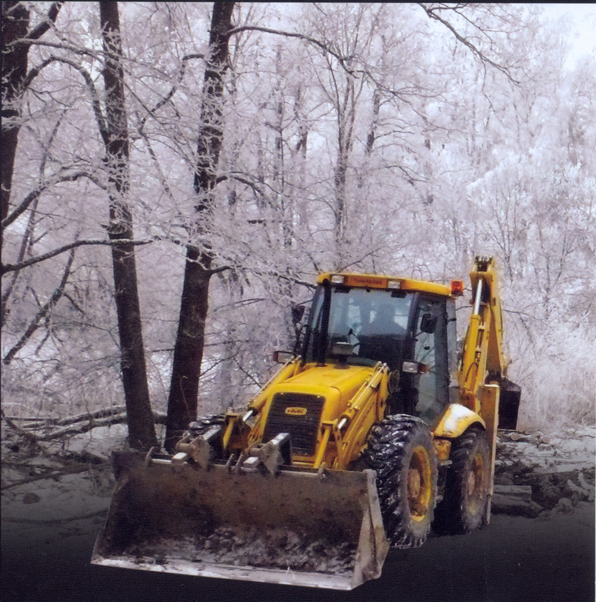
Všechny práce provádíme výhradně vlastním technickým vybavením se zkušenou a odborně proškolenou obsluhou pro maximální bezpečnost a efektivitu zakázky.
Zemní a výkopové práce pro pozemní, dopravní, průmyslové a inženýrské stavitelství. Zajišťujeme přesné vytyčení a hloubení základových pasů i velkoobjemové skrývky.
Pronájem špičkové stavební mechanizace světových značek. Možnost zapůjčení strojů s obsluhou i samostatně dle požadavků a dohody na stavbě.
Rychlá a spolehlivá přeprava sypkých materiálů, přistavení kontejnerů na suť a odvoz odpadů vozidly AVIA, MAN a LIAZ s nosností 3,5t až 13t.
Komplexní bourací práce stavebních objektů včetně drcení a recyklace materiálů ve vlastním zázemí s možností nákupu certifikovaného recyklátu.
Prohlédněte si kompletní nabídku naší techniky. Kliknutím na libovolný stroj zobrazíte podrobné technické parametry, nosnosti a rozměrové specifikace.
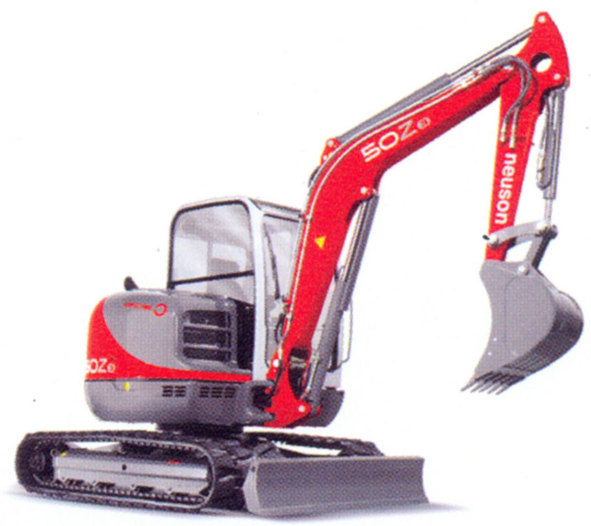
Pásová rypadlaKompaktní pásový minibagr s nulovým přesahem zádě (Zero Tail) pro precizní výkopové práce i ve stísněném prostoru.
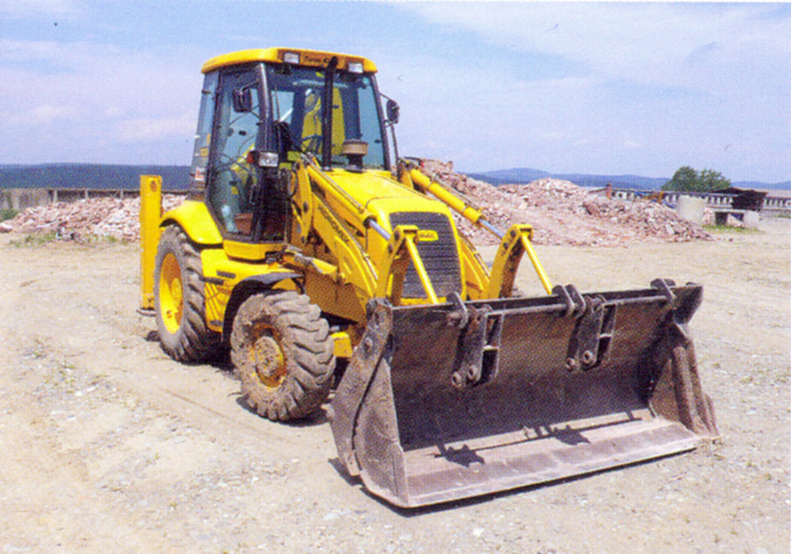
TraktorbagryUniverzální kolový rypadlonakladač 4x4 s vysokým výkonem pro těžké zemní práce a nakládání sypkých hmot.
Osvědčené rypadlonakladače světových značek JCB a NewHolland pro pozemní, inženýrské a silniční stavitelství.
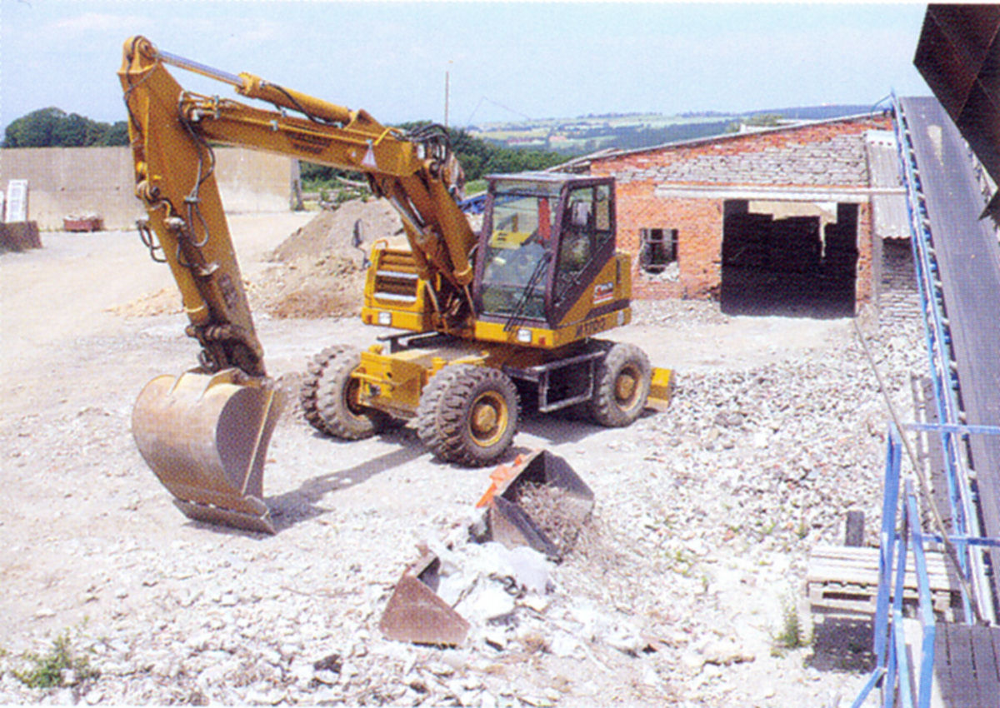
Kolová rypadlaTěžká kolová rypadla s demoličním kladivem a velkoobjemovou lžící 1,3 m³ pro demoliční a recyklační práce.
Flexibilní kompaktní rypadla na pryžových pásech pro práce v úzkých prostorech, zahradách a dvorech.
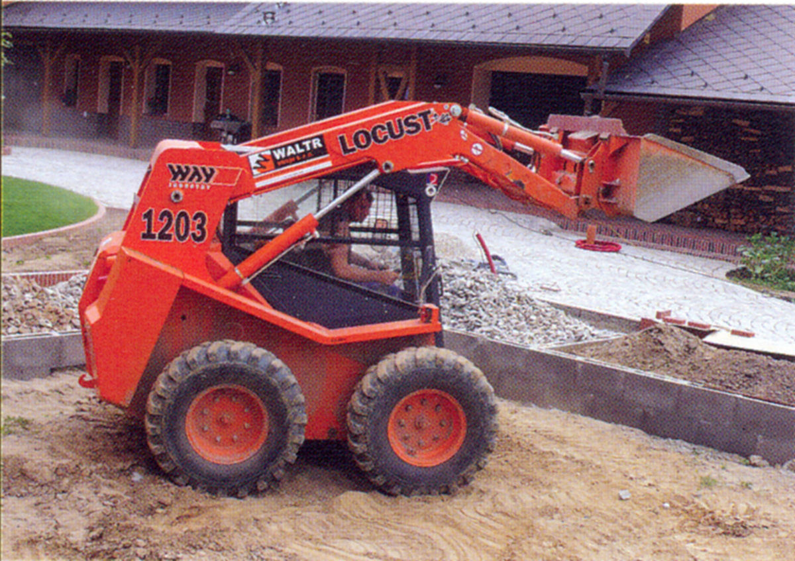
Smykové nakladačeVýkonný slovenský smykový nakladač WAY Industry pro přesuny hmot, terénní rovnání a manipulaci ve stísněném prostoru.
Osvědčený univerzální nakladač s vysokou obratností pro stavební a zahradní úpravy menšího rozsahu.
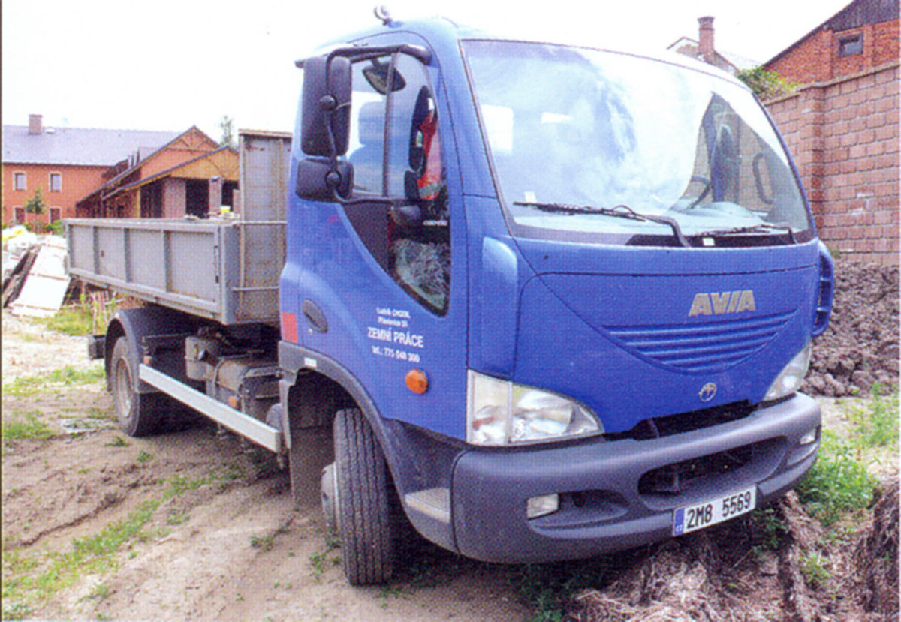
Kontejnerová dopravaRychlý a obratný kontejnerový nosič pro odvoz odpadu ze stísněných ulic měst a zahradních parcel.
Střední nosič kontejnerů s vysokou nosností 7 tun pro efektivní svoz těžkých stavebních materiálů.
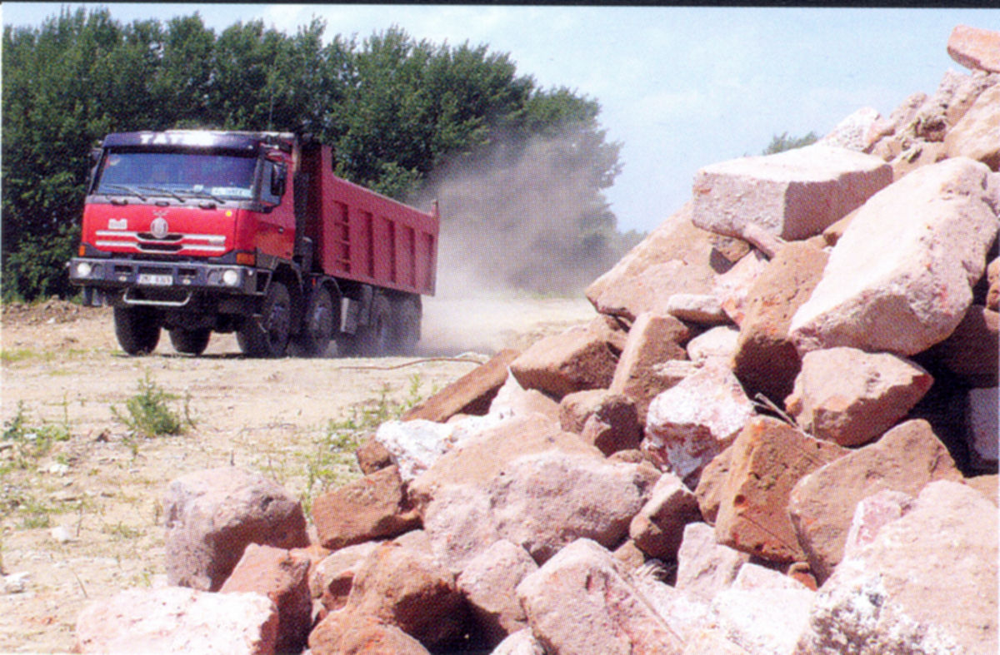
Kontejnerová dopravaRobustní velkoobjemové kontejnerové soupravy pro náročné průmyslové a demoliční zakázky.
Osvědčené terénní sklápěče pro masivní přesuny zemin, písků a kameniva přímo v náročném terénu staveniště.
Automobilový teleskopický jeřáb s nosností 20 tun pro montáže konstrukcí a manipulaci s těžkými břemeny.
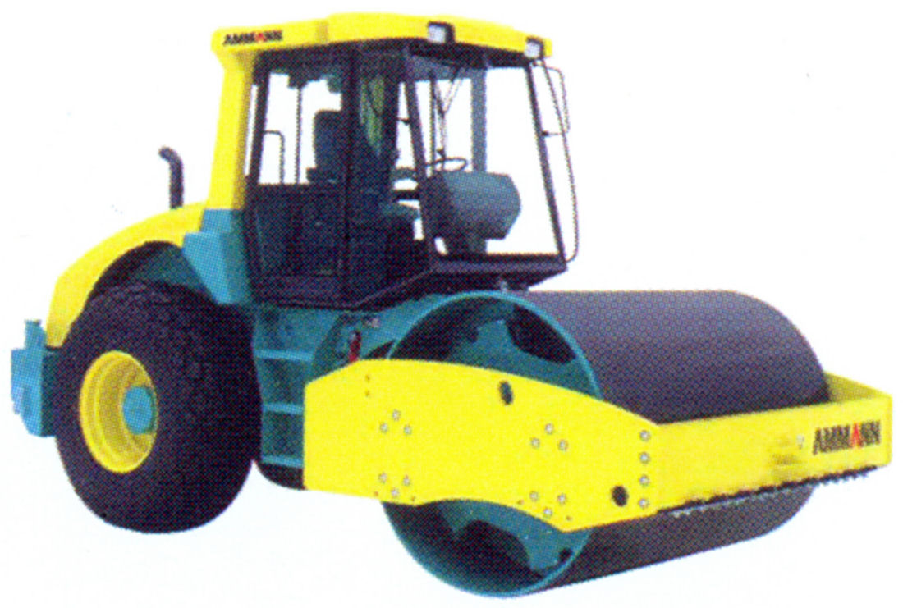
Hutnicí technikaTěžký zeminový válec s vysokou hutnicí silou pro zpevnění podloží silnic, dálnic a průmyslových ploch.
Kompaktní dvoububnový válec pro precizní hutnění v úzkých uličkách, na chodnících a kolem obrubníků.
Profesionální reverzní desky a pěchy (dusadla) pro hutnění výkopů, štěrkových loží a základových spár.
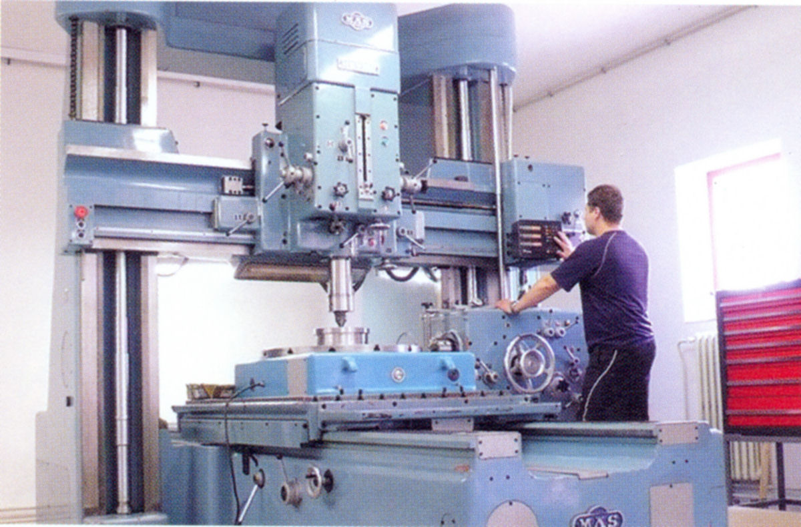
Bourací technikaVýkonná demoliční technika HILTI pro bourání betonu, sekání zdiva a jádrové vrtání prostupů.
Motorové podlahové řezačky s diamantovými kotouči pro čistý a rovný řez vozovek i průmyslových podlah.
Mechanizované spirálové vrtáky pro rychlé zhotovení přesných děr pro sloupky plotů a kotevní patky.
Mobilní dieselové a benzínové generátory pro stoprocentní energetickou soběstačnost každé stavby.
Ponorná kalová čerpadla s otevřeným oběžným kolem pro odčerpávání znečištěné vody z výkopů.
Kompletní výkopy pro pozemní, dopravní, průmyslové a inženýrské stavitelství vlastní moderní technikou.
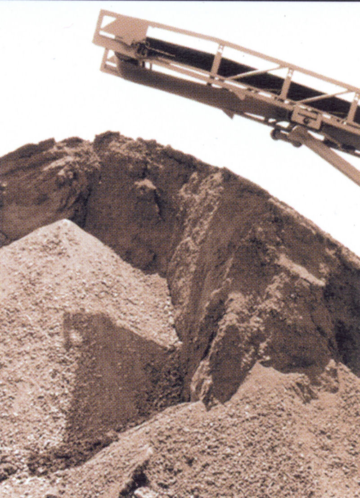
Demolice a recyklaceBourací práce průmyslových i obytných objektů včetně drcení, třídění sutě a prodeje kvalitních recyklátů.
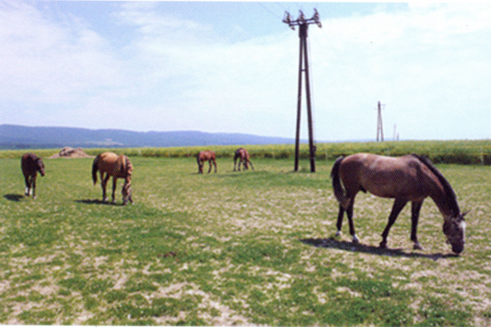
Stavební práceHrubé i jemné modelace terénu, svahování, úpravy podloží a výstavba komunikací a parkovišť.
Pronájem kontejnerových van od 3,5t do 13t s přistavením a okamžitým odvozem sutí, zemin a odpadů.
Podrobný popis zařízení a jeho nasazení v terénu.
| Parametr | Hodnota |
|---|
Reálné záběry naší mechanizace při práci na staveništích, výkopech, demolicích i zázemí servisních dílen v areálu Přáslavice.
Hlavní činností společnosti WALTR stroje s.r.o. je pronájem zemních a stavebních strojů včetně kompletního provedení stavebních zemních prací, autodoprava, bourací práce a zabezpečení recyklace zemin a sutin.
Firma tyto služby provádí výhradně vlastním technickým vybavením s odborně proškolenou obsluhou. Hlavním zázemím společnosti je depo a stanoviště mechanizace ve vlastním areálu v Přáslavicích (pouhých 7 km od Olomouce), kde se nachází depo strojů, dílny i kanceláře.
Rádi pro vás zpracujeme technický návrh nasazení techniky a individuální nezávaznou kalkulaci. Ozvěte se telefonicky, e-mailem nebo formulářem níže.
WALTR STROJE s.r.o.
Přáslavice 15, 783 54 Přáslavice
Vyplňte základní specifikaci vaší poptávky. Do 24 hodin vás budeme kontaktovat pro upřesnění termínu a potřebné mechanizace.
Přáslavice 15, 783 54 Přáslavice (GPS: 49.58540 N, 17.38128 E)